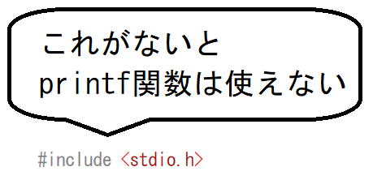
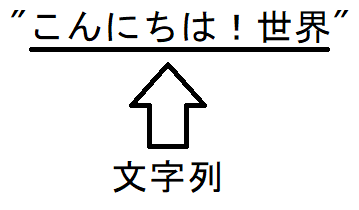
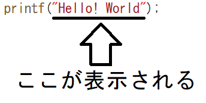
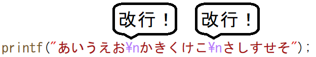
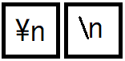

こんにちは！世界C言語に限らず、プログラミング言語を学習する最初のステップとして、『 「Hello! World」と表示する』というプログラムを学ぶことが多いです。 ただ単に「Hello! World」と表示させるだけのプログラムです。 Visual Studioでプロジェクトを作成し、このプログラムを入力してみてください。
そうすると画面に「Hello! World」と表示されます。 printf関数について画面にテキストを表示するには「printf」(ぷりんとえふ)という関数を使います。この関数を使うには、プログラムの最初に「 #include <stdio.h>」を記述します。この記述がないと使えません。  そして画面に表示するテキストは「"」で囲んで記載します。 この「"」に囲まれたテキストを「文字列」と言います。  そして、「printf(」～「);」の間に表示させたい文字列を記述することによって、 その内容が画面に表示されます。  改行する文字列を改行するには特殊な方法を使います。 仮に、
その場合は、文字列の中に「\n」を入れることによって改行します。
「あいうえお かきくけこ さしすせそ」 と表示されます。  ただ、せっかく実行結果は改行されているのにソースコードでは 改行されていません。 これでは非常に読みづらいので、次のように書くと良いでしょう。
次のprintfが次の行に表示されるようになり、読みやすくなります。 以降、本C言語入門では、特に理由のない限りは、printfの最後に「\n」を入れるように しています。 こういった特殊な文字を「エスケープシーケンス」といい、 改行以外にもいくつか種類があります。 「\n」の文字はブラウザによっては、次の2種類表示されることがあります。  信じられないかもしれませんが、「円マーク」と「/が左右反転した文字」は コンピュータは同じ文字として扱われています。 そのため、表示しているコンピュータやブラウザによって違うケースが出ています。 主なエスケープシーケンスエスケープシーケンスには主に次のようなものがあります。※ここではすぐに試せるエスケープシーケンスを紹介しており、 他にもいくつか存在します。
|
|
当Webサイトに記載されている内容は、筆者が独自に調査・研究した内容をまとめています。 そのため、記載されている内容によって、 いかなる損害が発生したとしても、筆者は責任を負いかねますのでご了承ください。 |